Kayak · Travel · Sponsored project
Bringing group travel to Kayak
Planning a trip with friends means juggling budget, dates, and location across scattered chats, and Kayak has no group travel features today. I led a team of nine UX designers through research to design them.
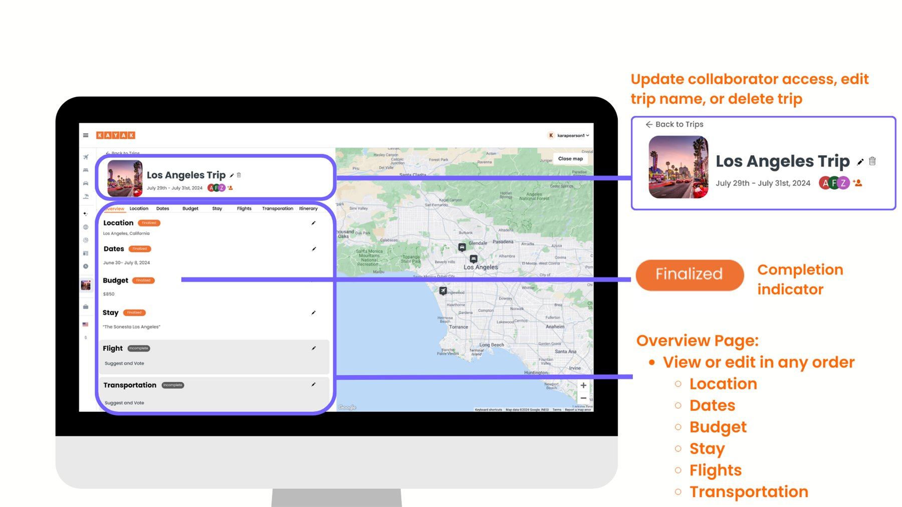
Overview
KAYAK is a travel metasearch engine for flights, hotels, rental cars, and vacation packages. Our goal was to create group travel features for its website for a better desktop experience.
The problem
One person usually leads planning, and price, location, and safety matter most. Group members often search at the same time for the "best deal," so it's hard to compromise on budget, location, and dates, flexibility and privacy suffer, and communication is hard to manage. Today, KAYAK has nothing to support this.
where do u wanna go?
Mayaidk somewhere warm?
what do u wanna spend?
Jessunder $500??
Mayathat's not gonna work lol
when are u free
Mayanot june
Jessi'm only free in june 😭
The most important part of planning a trip is also the most complicated: budget, dates, and location.
Process
Milestone 1Who are we designing for?
Secondary research showed KAYAK once had a group feature, Trip Huddle, that faded mostly from poor marketing. We then ran 18 interviews with family and friend groups, which showed our primary group-travel users are older Gen Z and Millennials.
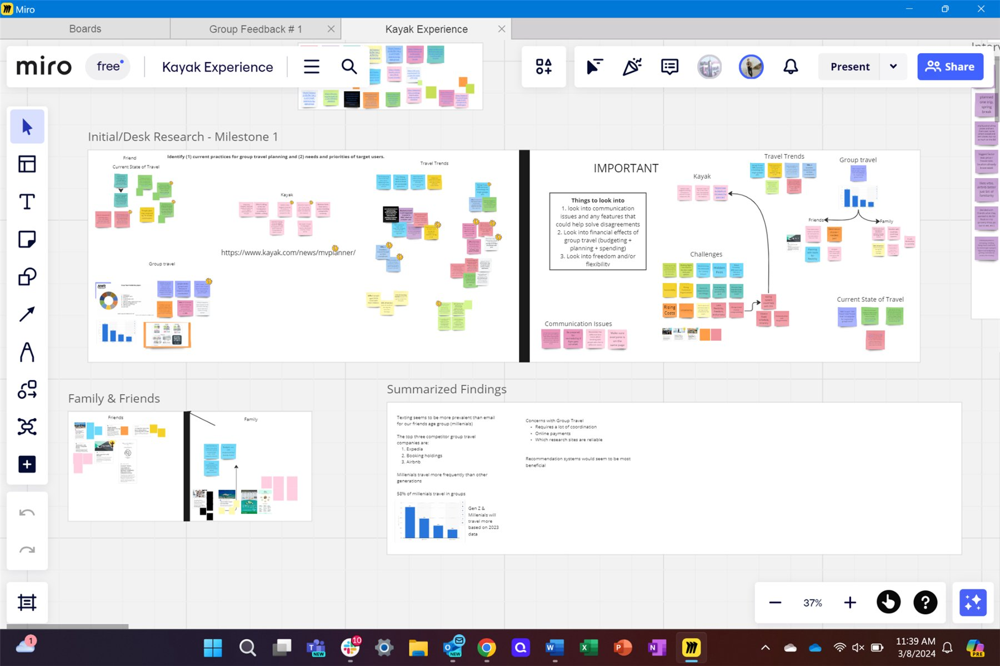
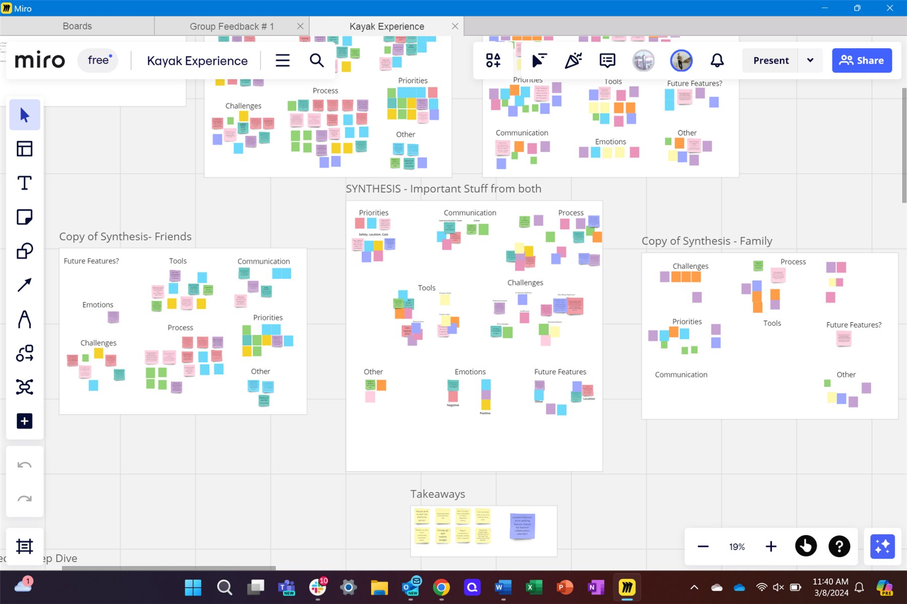
Milestone 2How do groups travel?
Interviews, a long-term contextual inquiry, and a workshop showed that budget, dates, and location are decided at the same time, and not every traveler wants the same ones. Group members need constant communication.

Milestone 3How can KAYAK improve?
Before designing, we needed to know what KAYAK already did well, where it fell short, and what other platforms had figured out about group travel.
Competitive analysis
Our sponsor gave us a list of KAYAK's competitors, and we added to it. Each of us took one competitor, captured screenshots, and broke down how it handled budget, location, dates and collaboration, plus its pros, cons and opportunities for KAYAK.
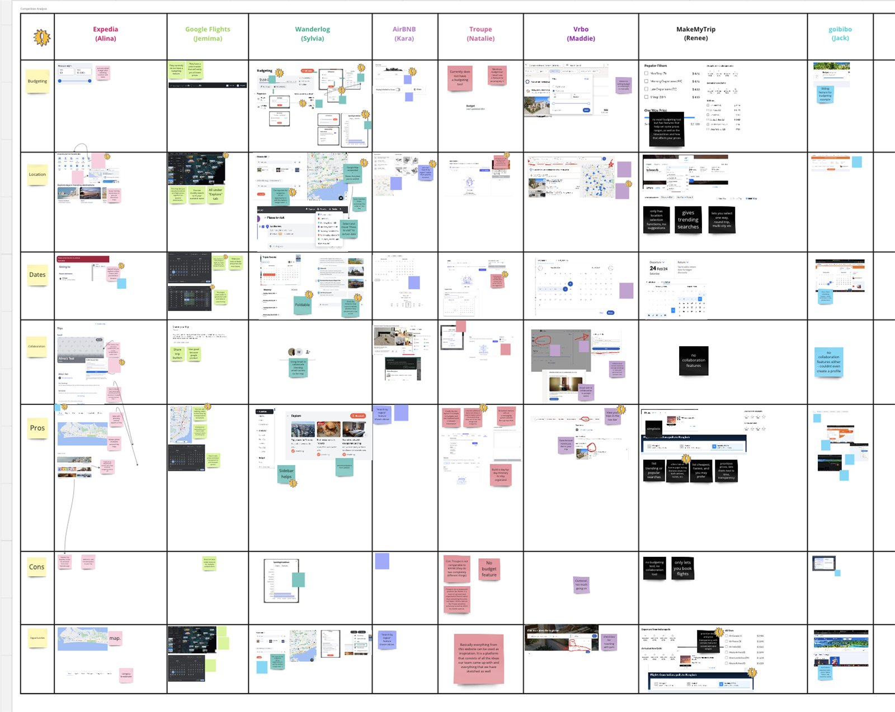
What we took away:
- Collaborative calendar: every member enters their availability.
- Expense tracking: show who has paid, so splitting costs causes less friction.
- Map with activities: hotels, attractions and things to do, embedded in the site.
- Voting: a way to settle it when the group can't agree.
- Day-by-day itinerary with prices visible throughout.
- Sort and estimate: options like Cheapest, Fastest and Recommended, plus a budget estimator.
Heuristic evaluation
All nine of us planned a hypothetical trip on KAYAK, four international and five domestic, to see it the way a first-time user would.
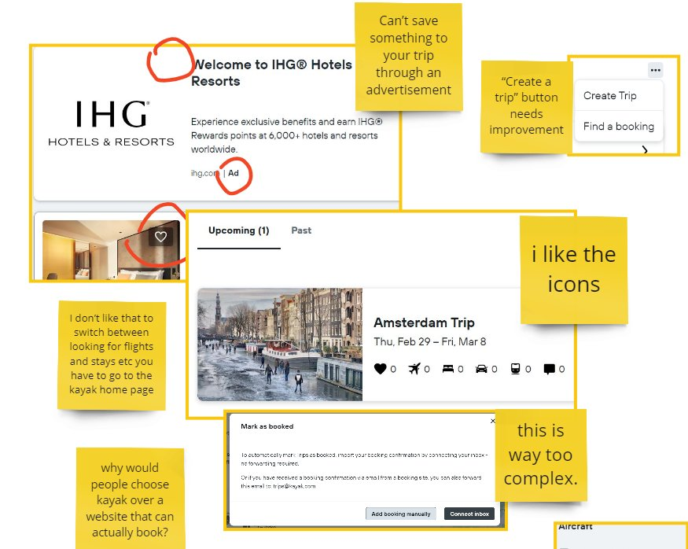
- The itinerary builder only searched activities by location, with no dates or times.
- "Create Trip" was tucked into a corner and hard to find.
- Ads pushed specific hotels but didn't let users save them to a trip.
- The interface felt overwhelming to navigate.
- What worked: best travel times by price range, and searching by trip when you don't know where to go.
Feature sketching
With those insights, we spent 25 minutes each sketching one to three features to fix the gaps: a budget breakdown, voting, suggested dates, and a map for exploring activities.


Milestone 4Design and test
We turned these findings into the group travel features below, then ran concept testing. Users preferred the tab overview to a grid, but struggled to tell admins from viewers, so we added clear role indicators.
The solution
The final designs give a group what it needs on desktop:
- Change any part of the trip at any time.
- Suggest and vote. Each member can suggest a destination for the group to vote on.
- Individual and group budgets. Each person sees their own budget breakdown as well as the group's.
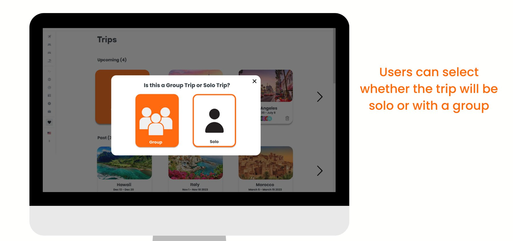
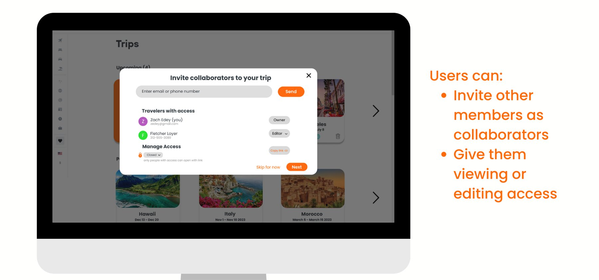
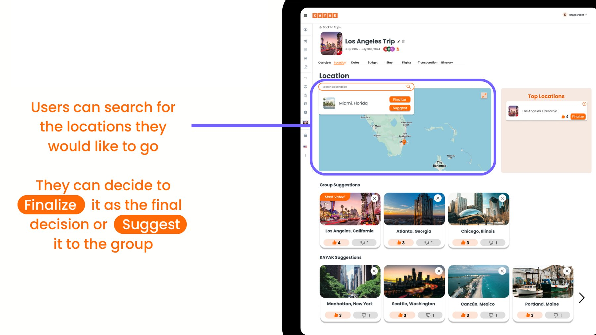
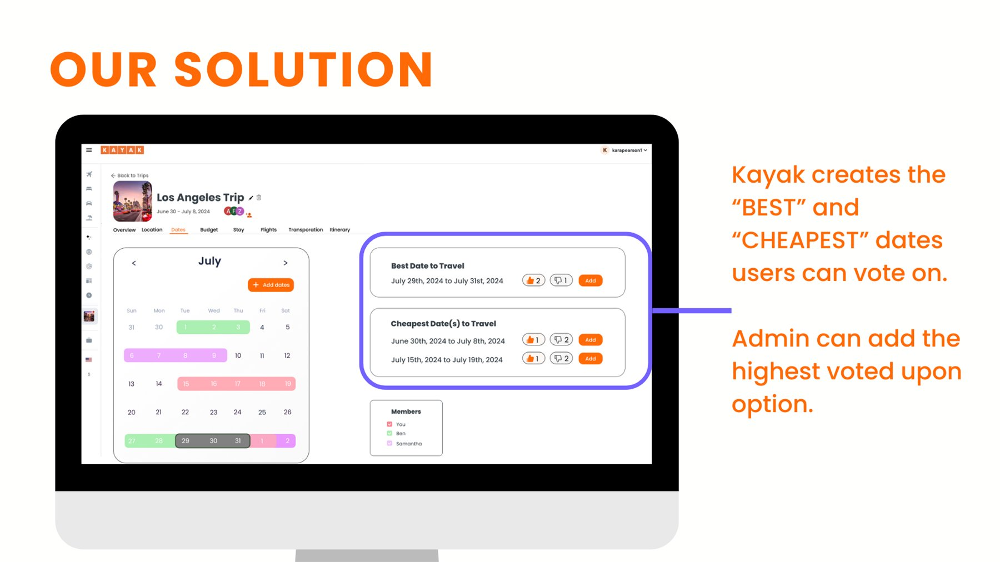
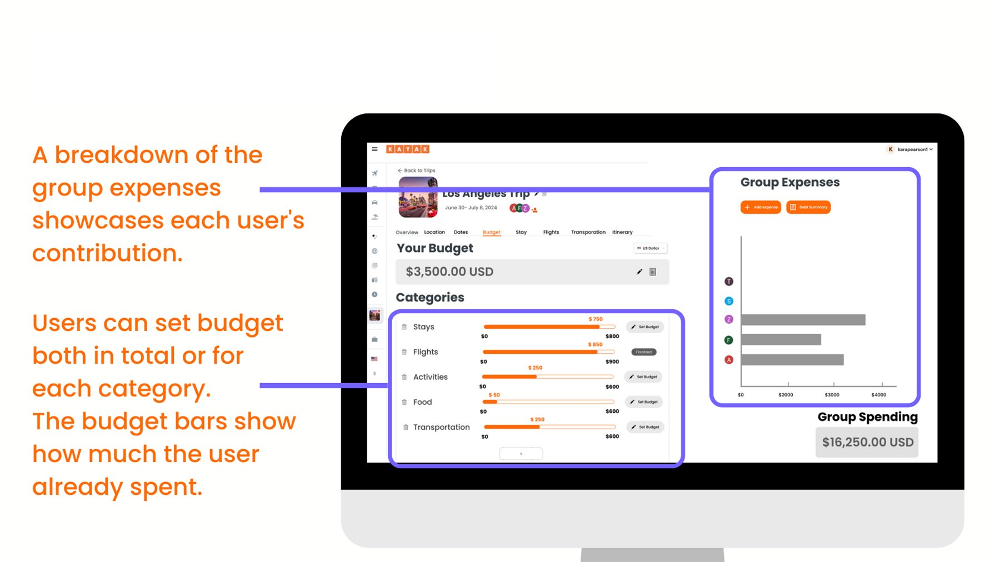
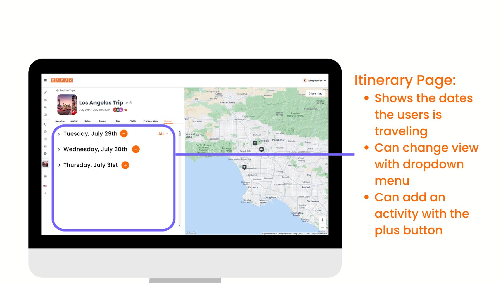
Impact & learnings
My impact
- Led the team: I led UX designers with varying skill levels through mentorship and collaboration.
- Led stakeholder meetings to gather feedback and stay aligned.
- Redesigned core features from user insights.
- Planned and conducted usability tests.
What I learned
- Balancing user needs and business goals: prioritizing the changes with the greatest impact on both.
- Design consistency: keeping patterns and visual language cohesive across features.
- Agile design: iterating quickly in a fast-paced, cross-functional workflow.
Limitations & next steps
We didn't design for kids or pets, KAYAK is a metasearch with no direct booking, and voting was under-tested. Next I'd test voting on stays, flights and transportation, and test within KAYAK's design system.
Next project